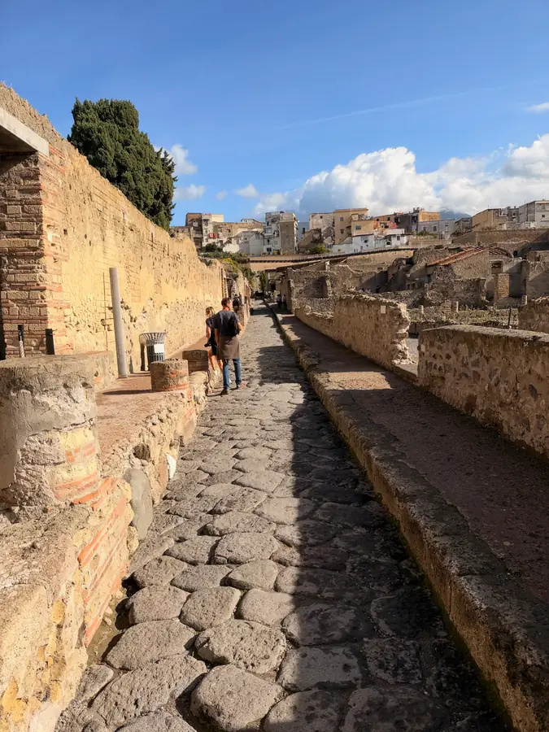

План у нас опять поменялся. Утром, ещё на юге, мы сели и честно посчитали: Бари, Апулия, литургия в Неаполе, а потом ещё Венеция или Пиза. Это сколько же часов за рулём? Выходило, что Италию мы будем видеть в основном через лобовое стекло. Так что Бари отложили, суету отставили и решили по-другому: одна база, переезды не больше часа. Вариантов на столе было много, а выбрали самый простой. По-моему, правильно.
За эту поездку я понял про себя простую вещь. Я не люблю много ездить. А по центрам городов не люблю особенно. После Неаполя, где езда и парковка — это, скажу мягко, жесть, я на любое «а давай заедем в центр» отвечаю встречным вопросом: а машину где поставим?
Позади Неаполь, Монтекассино, тропы над Амальфи и крипта с мощами апостола Андрея Первозванного. Неделя получилась плотная, и серпантинов нам хватило с запасом.


Но в последний наш день на юге был ещё Геркуланум. Это сосед Помпей, и Везувий накрыл его в тот же день семьдесят девятого года. Только Помпеи засыпало пеплом, а Геркуланум залило горячими потоками, слоем метров в двадцать. Город меньше Помпей, зато там сохранилось то, чего в Помпеях почти не осталось: обугленное дерево, балки, кое-где вторые этажи. Наверху живёт обычный современный Эрколано, а древний город лежит под ним, в огромном котловане. Две тысячи лет разницы — по вертикали, метров двадцать.
Дальше — долгая дорога на север. Около трёхсот километров, почти весь день в машине. Да, я помню, что только что писал про «не больше часа». Но это был последний большой переезд, обещаю. Ну, почти обещаю.
Ехали мы тогда с планом на Валь-д'Орчу: Пиенца, поле из «Гладиатора», Монтепульчано, Монтальчино, горячие источники. Спойлер: и этот план проживёт меньше суток. Но об этом завтра.
Ночевать нам предстояло в агритуризме за городом. Хозяйка заранее написала: ехать по Google Maps или Waze, только не по Apple Maps. Видимо, кто-то уже пробовал. А ещё выезд до одиннадцати — тоже важная информация, когда ты привык к семейному темпу сборов.

Орвието сначала видишь снизу. Посреди равнины стоит огромная скала, а на ней, как на подносе, весь город с собором. Скала туфовая, то есть из спрессованного вулканического пепла. Этруски жили здесь ещё до римлян, а в Средние века папы не раз уезжали сюда из Рима и прятались — на такую скалу без спроса не залезешь. Вот и мы залезать на машине не стали. Оставили её внизу, у подножия скалы, и поднялись в старый город пешком.
Ужинали в старом Орвието. После целого дня дороги ужин в городе на скале — это уже само по себе награда. Утром Везувий, вечером этрусская скала — вот такой у нас получился день, и юг вдруг остался где-то очень далеко.
Десятый день поездки, суббота. Завтра воскресенье, и надо найти, где помолиться.